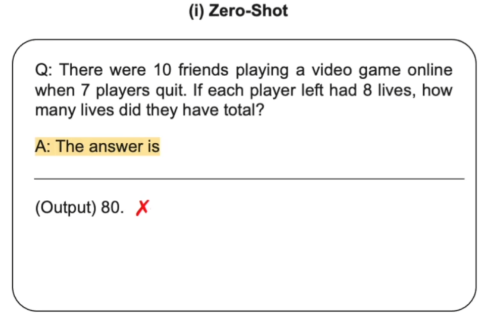
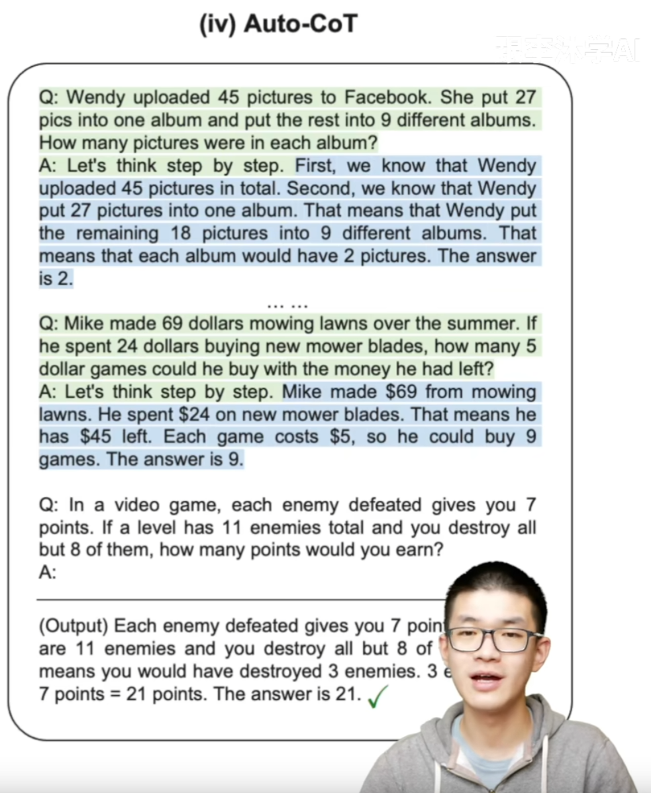

Chain of Thought
Ai需要鼓励吗？
参考：Chain of Thought论文、代码和资源【论文精读】
原始版本
《Chain-of-Thought Prompting Elicits Reasoning in Large Language Models》——思维链概念的开山之作
这篇文章是现任谷歌大脑研究员的Jason Wei在22年1月放到arxiv上面的文章，在上文所说的大背景下提出了思维链这个概念。简单来说，思维链是一种离散式提示学习，更具体地，大模型下的上下文学习（即不进行训练，将例子添加到当前样本输入的前面，让模型一次输入这些文本进行输出完成任务），相比于之前传统的上下文学习，即通过x1,y1,x2,y2,…x_test作为输入来让大模型补全输出y_test，思维链多了中间的一些闲言碎语絮絮叨叨，以下面这张图为例子：

思维链的絮絮叨叨即不直接预测y，而是将y的“思维过程”r（学术上有很多学者将这种过程统称为relationale）也要预测出来。当然最后我们不需要这些“思维过程”，这些只是用来提示获得更好的答案，只选择最后的答案即可。作者对不同的数据集的原本用于上下文学习的提示标注了这些思维链然后跑了实验，发现这么做能够显著的提升性能。
COT一经提出就引发了社区对它的热烈讨论，类似 AI 是不是也需要鼓励来获得更好的表现之类的问题
具体讲解
zero-shot
-
输入问题，等待输出结果。
-
文献：Large Language Models are Zero-Shot Reasoners(https://arxiv.org/abs/2205.11916)
-
语言模型的输入是一道数学题连接一个字符串“The answer is”，然后让语言模型进行续写

CoT
-
比如输入问题并提示Let’s think step by step
-
语言模型的输入还是一道数学题连接一个字符串“Let’s think step by step”，然后让语言模型进行续写
-
这种情况下，语言模型会续写出中间推理步骤，并最终生成答案
Manual-CoT
一种few shot方法，所以构造了一些模板Q&A（模板A中也有Let’s think step by step），然后再给出问题并提示Let’s think step by step。
- 文献：Chain of Thought Prompting Elicits Reasoning in Large Language Models（https://arxiv.org/abs/2201.11903）
- 这种情况下使用到了少样本学习，在输入问题之前，手动设计一些问题和答案的样例（样例的答案给出中间推理步骤），这些问题和答案都需要手动构造，所以叫 Manual-CoT
- 语言模型的输入是一些手动设计的问题和答案的参考样例连接一个真正需要求解的问题，然后让语言模型进行续写
- 这里少样本训练中的问题和答案的样例都需要人为构造并手动设计，因此为了和第四种自动 CoT 做区分，这里称为 Manual-CoT
- Manual-CoT 比 Zero-Shot-CoT 的性能要好，因为它采用的是 few shot ，在输入中提供了一些问题、中间推理步骤以及答案的样例给语言模型进行参考。但是，提供这些样例需要进行人工设计，这就需要一定的人工成本
Auto-CoT
采样多个问题，每个问题提示Let’s think step by step，让模型给出答案。然后拼接所有生成的Q&A并给出最终问题，并提示Let’s think step by step。
- 文献：Automatic Chain of thought Prompting in Large Language Models（https://arxiv.org/abs/2210.03493 ）
Auto-CoT 其实也是受到了 Manual-CoT 的启发，既然Manual-CoT 比 Zero-Shot-CoT 的性能要好，而且性能好的关键就在于人工设计的问题、中间推理步骤和答案的样例，那么就可以考虑将这部分进行自动化，从而节省人工成本
实时发现是可行的，做法主要分为两步
- 通过多样性选取有代表性的问题
- 对于每一个采样的问题拼接上“Let’s think step by step”（类似于 Zero-Shot-CoT ）输入到语言模型，让语言模型生成中间推理步骤和答案，然后把这些所有采样的问题以及语言模型生成的中间推理步骤和答案全部拼接在一起，构成少样本学习的样例，最后再拼接上需要求解的问题一起输入到语言模型中进行续写
-
最终模型续写出了中间的推理步骤以及答案，并且质量非常高
-
值得一提的是，在十个数据集上 Auto-CoT 是可以匹配甚至超越 Manual-CoT 的性能，也就说明自动构造的 CoT 的问题、中间推理步骤和答案样例比人工设计的还要好，而且还节省了人工成本
-
在 Auto-CoT 中，其实也是用到了很多个“Let’s think step by step”对每个采样的问题分别触发中间推理步骤和答案，这也是为什么叫它“Let’s think not just step by step but also one by one”，也就是AI需要多鼓励几次
